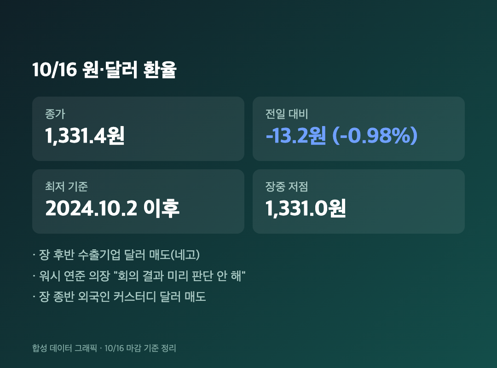
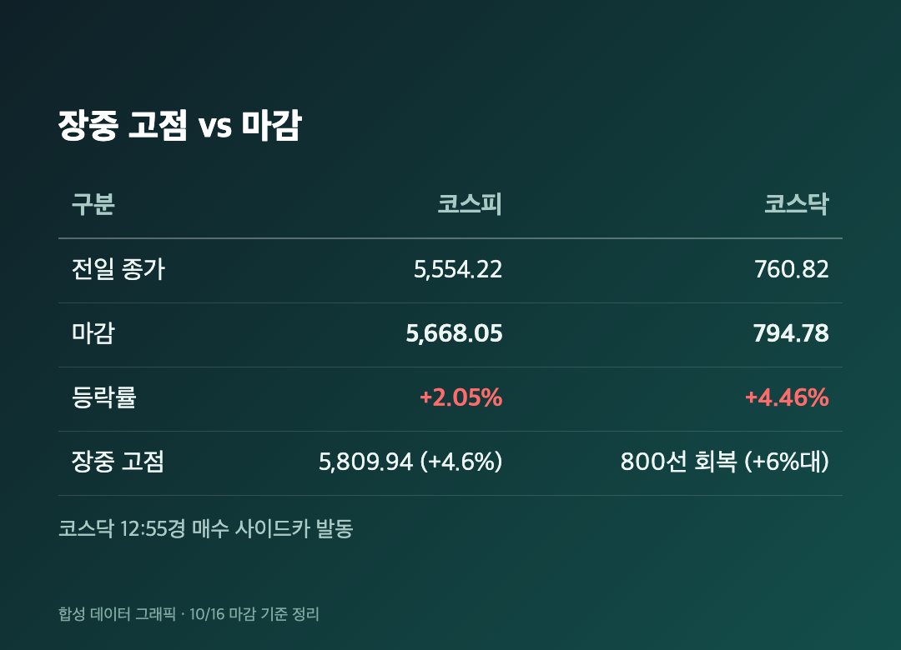
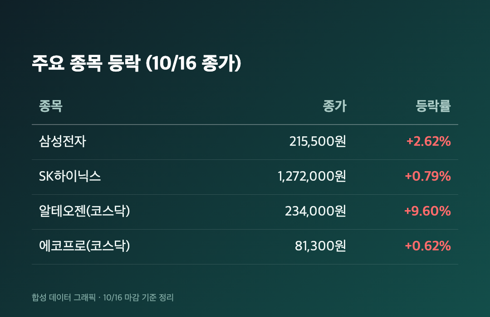
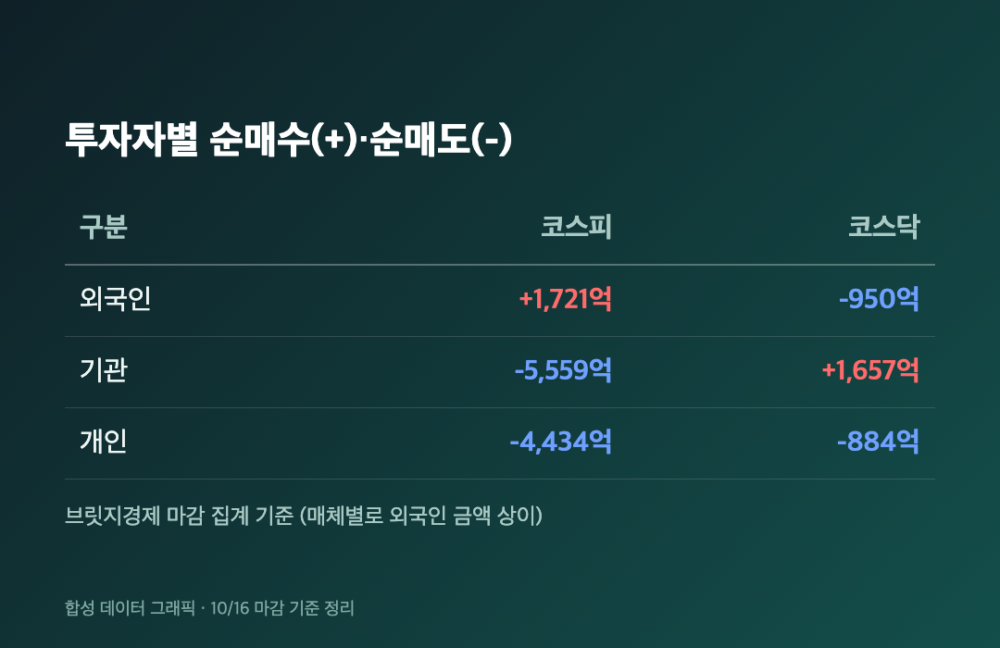

215,500원. 어제 210,000원이던 삼성전자 숫자인데요, 오늘 이렇게 찍혔습니다. 25주 기준으로 약 13만 7,500원이 돌아왔어요. 어제 날아간 55만원에 비하면 간에 기별만 간 수준이지만요.
참고로 오늘(10/16, 금)은 정상 개장일이었고, 아래 수치는 전부 오늘 마감 기준이에요.
💱 환율 1,331.4원 – 2년 만의 최저, 13.2원 급락
원·달러 환율 1,331.4원 (-13.2원, -0.98%) / 2024년 10월 2일 이후 최저 |

주식보다 먼저 눈에 들어온 게 환율이었어요. 전일 대비 13.2원 내린 1,331.4원으로 주간 거래를 마쳤고, 하루 낙폭은 지난달 22일 이후 가장 컸다고 해요. 오전엔 결제 수요 때문에 오르는 흐름이었는데, 장 후반부터 수출기업의 달러 매도 물량(네고)이 나왔고 장 종반엔 외국인 수탁 달러 매도까지 겹쳤습니다.
여기에 케빈 워시 연준 의장이 IMF 연차총회에서 "나는 회의 결과를 미리 판단하지 않는다"고 말한 게 비둘기파적 신호로 읽히면서 달러가 약해졌어요. 최근 미국 CPI·PPI가 예상보다 높아서 조기 금리 인상 우려가 컸거든요. 은행권 외환딜러는 다음 주엔 큰 이벤트보다 국내 수급이 더 중요하고, 환율은 1,320~1,360원 사이에서 움직일 걸로 봤습니다.
🇰🇷 코스피 5,668.05 (+2.05%), 코스닥 794.78 (+4.46%) – 장중엔 4.6%까지 뛰었어요
코스피 5,668.05 (+113.83포인트, +2.05%) / 코스닥 794.78 (+33.96포인트, +4.46%) |

코스피는 5,642.25(+1.58%)로 출발해서 장중 한때 5,809.94, 무려 +4.6%까지 올랐어요. 그런데 마감은 +2.05%. 올라갈 때 신나다가 막판에 반 넘게 반납한 셈이라, 25주 쥔 입장에선 "그래도 5,800 보긴 봤다" 하고 만족해야 하나 싶었습니다.
코스닥은 더 셌어요. 낮 12시 55분쯤 매수 사이드카가 발동됐고 장중 6% 넘게 올라 800선을 되찾았는데, 마감은 794.78이라 800선은 아쉽게 못 지켰습니다. 코스피 종가는 이투데이만 5,668.06으로 1포인트 다르게 썼고, 나머지는 5,668.05라서 이쪽으로 적었어요.
SBS는 "8거래일 만의 반등"이라고 제목을 달았는데, 같은 기사 본문엔 "지난 7거래일 동안 이어진 하락세"라고 적혀 있어서 표현이 살짝 달랐어요. 어쨌든 하락 행진이 멈춘 건 맞습니다.
🙌 왜 올랐나 – 낙폭 과대 반발 매수와 AI 우려 완화
전일 코스피 -7.57% 이후 반발 매수 / AI 투자 우려 완화 |
어제 -7.57%를 맞고 나니 오늘은 되돌림이 나올 만한 자리였어요. 대신증권 이경민 연구원도 최근 낙폭에 따른 되돌림이 나타났다고 분석했고요. 여기에 AI 투자 우려가 조금 누그러졌는데, 젠슨 황 엔비디아 CEO의 발언이 투자심리 개선에 영향을 줬다는 분석이 나왔어요.
다만 이건 "그렇게 분석하더라"는 얘기지, 저는 정확히 어떤 발언이 얼마나 영향을 줬는지까지는 확인하지 못했어요. 확인된 건 어제 크게 빠졌고 오늘 올랐다는 사실까지입니다.
📊 삼성전자 +2.62%, 하이닉스 +0.79% – 알테오젠은 +9.60%
삼성전자 215,500원 (+2.62%) / SK하이닉스 1,272,000원 (+0.79%) / 알테오젠 234,000원 (+9.60%) |

삼성전자는 어제 210,000원에서 215,500원으로 올랐어요. 하이닉스는 1,262,000원에서 1,272,000원으로 +0.79%라 사실상 숨 고르기 수준이었습니다. 어제 -11.06% 맞은 걸 생각하면 반등이라기엔 조촐한 숫자예요. SBS Biz 장중 시황 제목도 "삼전닉스 주춤…건설·화장품주 강세"였는데, 본문까지는 못 봐서 업종별 등락은 적지 않을게요.
코스닥에선 알테오젠이 234,000원(+9.60%)으로 두드러졌고, 에코프로는 81,300원(+0.62%)이었어요. 저는 삼성전자만 들고 있어서 알테오젠 상승은 그냥 구경만 했습니다.
💸 외국인은 사고, 기관·개인은 팔았어요
코스피 외국인 +1,721억원 / 기관 -5,559억원 / 개인 -4,434억원 |

어제와는 그림이 정반대예요. 코스피에서 외국인이 1,721억원 순매수로 돌아섰고, 기관은 5,559억원, 개인은 4,434억원을 순매도했습니다. (외국인 금액은 이투데이가 3,428억원 순매수, "9거래일 만의 매수세"라고 쓴 곳도 있는데, 집계 시점이나 기준 차이로 보여요. 장중 뉴스핌 기사엔 2,507억원 순매도로 나온 적도 있었고요. 저는 브릿지경제가 쓴 마감 기준 1,721억원으로 적었습니다.)
코스닥은 기관이 1,657억원 순매수였고, 외국인(-950억원)과 개인(-884억원)이 팔았어요.
마무리하며
코스피 5,668.05(+2.05%), 코스닥 794.78(+4.46%), 환율 1,331.4원. 장중엔 코스피 5,809.94까지 갔다가 5,668에서 끝났다는 점이 오늘의 포인트였어요.
삼성전자 25주는 그대로 쥐고 갑니다. 다음 주 볼 건 외국인 순매수가 이어지는지, 환율이 1,320~1,360원 안에서 버티는지, 두 가지예요.
주말 잘 보내세요. 월요일엔 또 뭐가 기다리고 있을지 😮💨